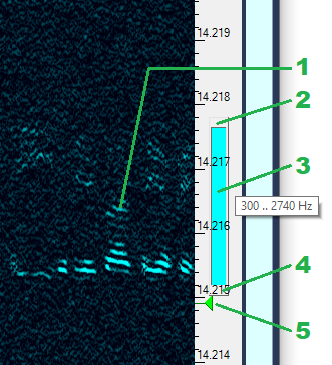
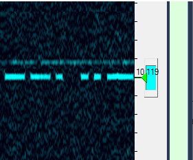

Bandpass Filter Plugin
Purpose
This plugin implements a digital bandpass filter for the received audio. The bandwidth of the filter is adjustable by the user.
Settings
Latency
There is a trade-off between the sharpness of the filter skirts and the delay introduced by the filter. Increase the latency for a sharper filter, or decrease it for faster response. The default latency is 10 ms.
Visual Representation
Some plugins, such as Waterfall Display and Band Scope, provide visual representation of the filter and allow the user to adjust the filter passband to match the operating conditions. On the screenshot below, the blue rectangle 3 shows the extent of the filter passband. You can change the upper and lower cutoff frequencies of the filter by dragging the edges 2 and 4 of the filter rectangle. Since the SSB signal 1 being received is also shown, it is easy to match the filter to the signal.
The green triangle 5 indicates the dial frequency of the radio. In the SSB mode it is the frequency of the suppressed carrier.

In the CW mode, only the bandwidth of the filter is adjustable, the passband is always centered at the dial frequency. The next screenshot shows a CW signal and an unmodulated carrier near it. You could get rid of the carrier by setting the filter passband to its minimum, 20 Hz, but the sound of such narrowband audio is not pleasant to the ear. Normally you want to have the filter only as narrow as is needed to suppress the interference. Using the visual filter control in the waterfall display, you can set the filter bandwidth in such a way that the upper cutoff is just below the carrier, to have nice audio and no interference.
